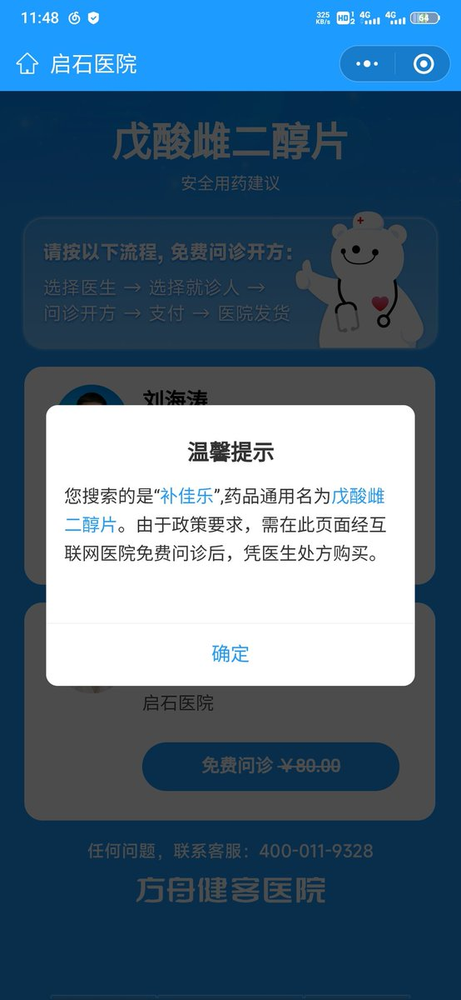

TixItem4527🏳️⚧🍥
@TixItem4527
感谢当年的引路人🙏

摆烂阿华
@yuyuanyuanhua2
感觉好多人还是买不到国补，所以决定教大家怎么在国内平台上购买（需要有女性身份证）
1.下载方舟健客（注意是应用，不是微信小程序）
2.打开搜索栏搜补佳乐，不要管没有跳出相关的，直接搜就好了
3.搜索之后会转跳到微信的一个叫做方舟云医的小程序，选择免费问诊，会让你弄问诊人，尽量用女性的 https://t.co/A4yiA0W9vW